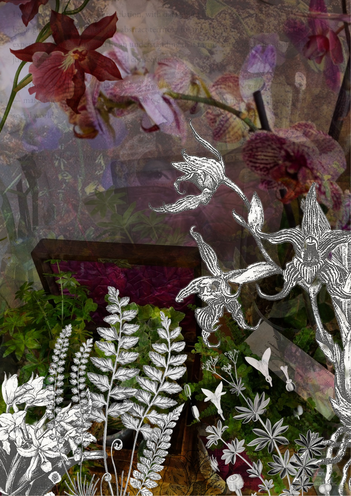
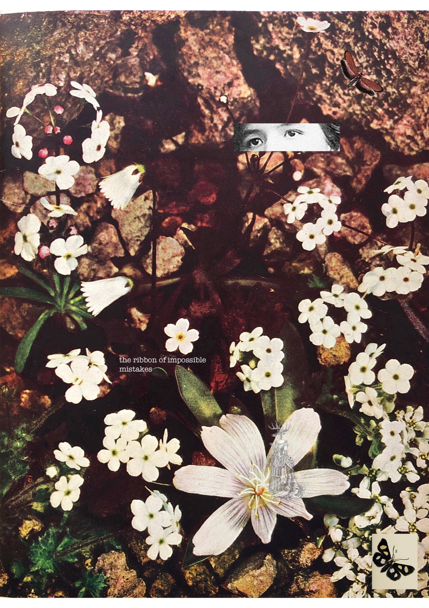
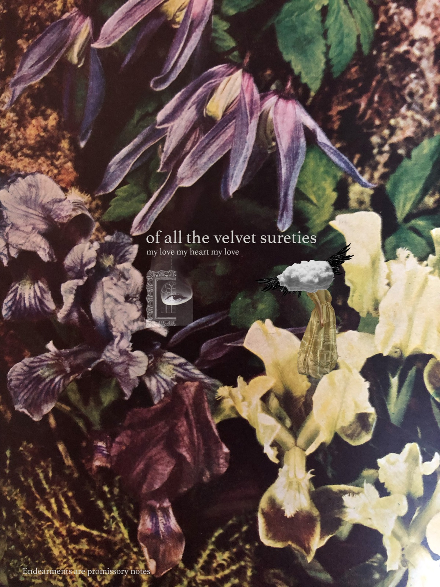
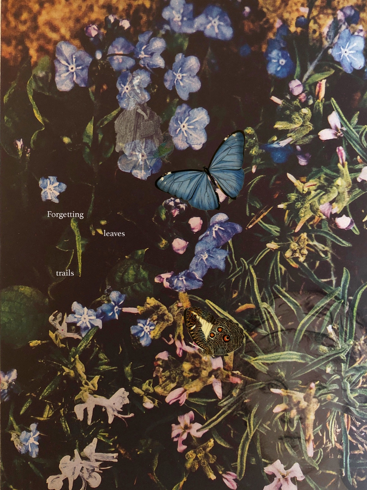
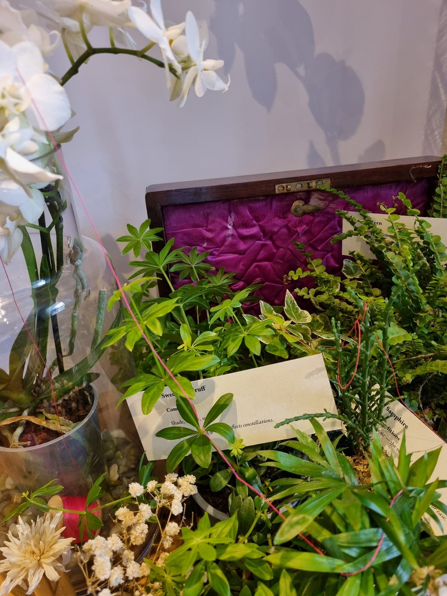
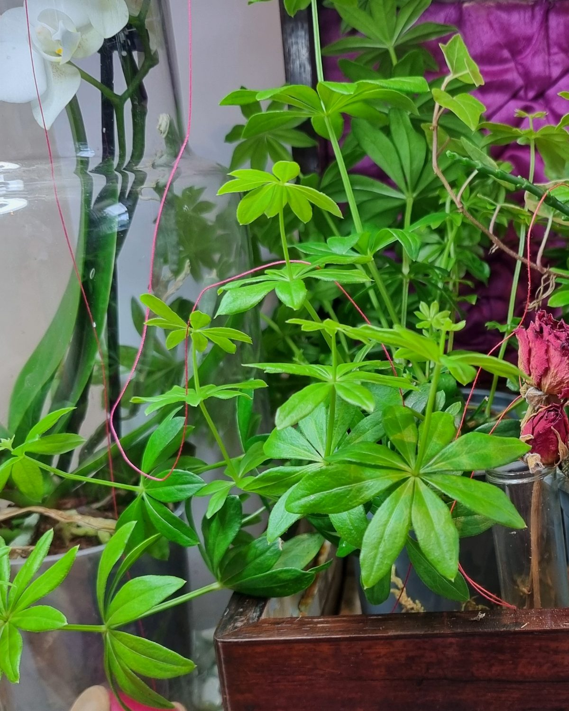
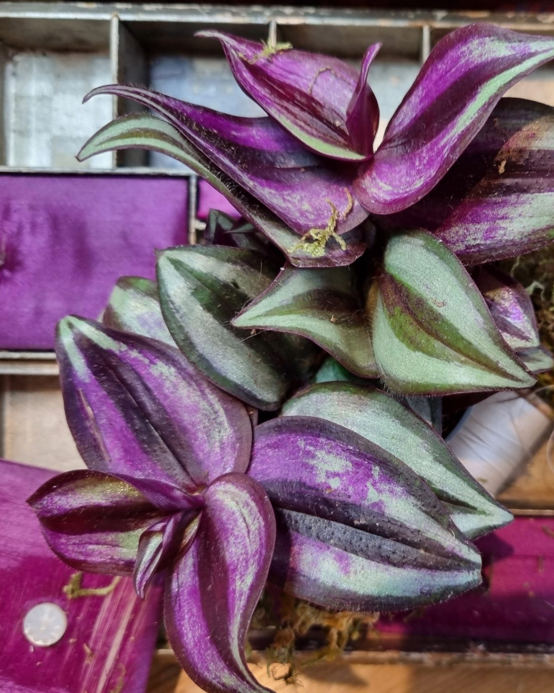
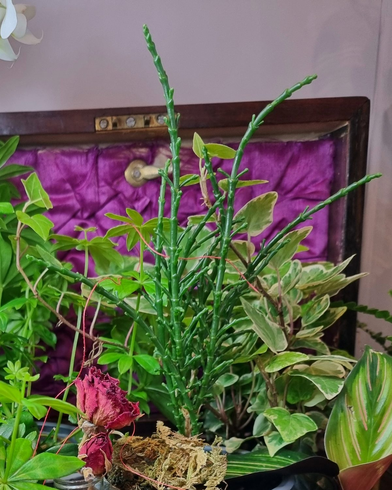
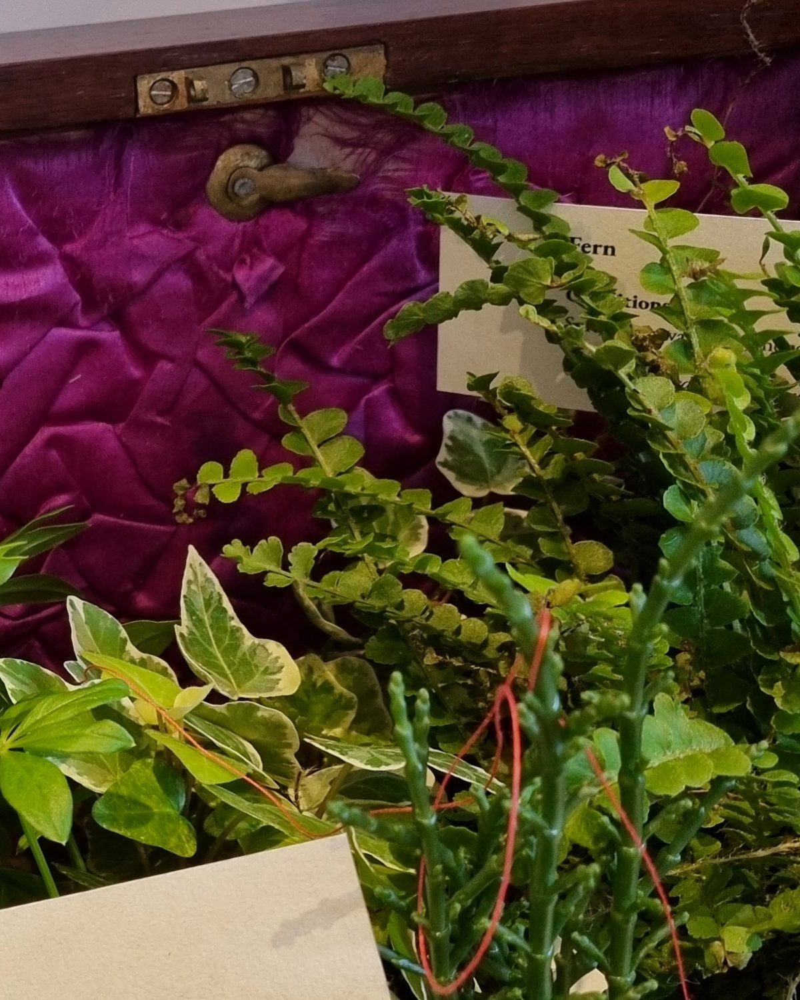
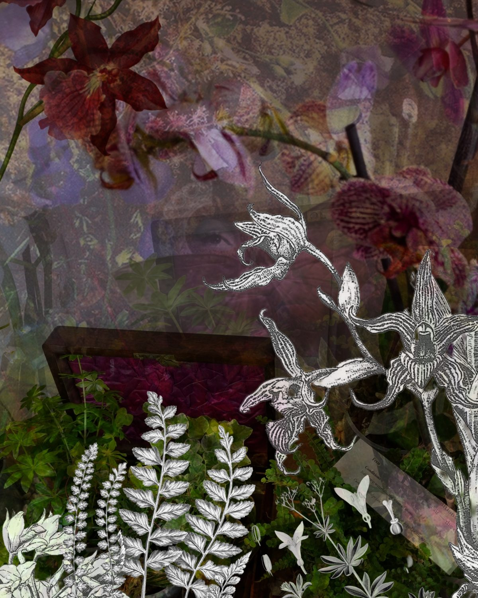

Is categorisation a synonym for containment?

Botanica is a work in progress. The images here are from a small, living pilot installation exploring what gets lost when complex, relational lives are organised into categories.
In its current stage, a Victorian sewing box sits at the centre of Botanica: a set of compartments lined in magenta silk, built to separate and order thread, pins, buttons, much as some social categories were ordered at the time the box was made. But here, the compartments are filled with living plants, and the categories begin to strain. A root reaches tendrils past its partition. A stem spills out of its allotted space. A fern begins to unfurl then dries out.
The box still organises. But the shape of the contents have changed, and can no longer fully care or contain the complexity of what it holds.
How can material, participatory forms of data help educational organisations 'know' their students more fully — and could it widen the evidence policy draws on, beyond what algorithms already count?
Earlier collages established Botanica's visual language: found taxonomies, poetic labels and living forms held in unstable, questioning - sometimes dissonant, sometimes invisible - relation.

I am developing Botanica in my studio, where a series of plants of different varieties nestle together, rather than in their preferred conditions or ecosystems in the rest of my flat. Each plant I have chosen to use has different requirements and characteristics — I have used poetry to personify each plant through the use of labels which both classify the plant 'as' a plant according to the conditions it requires and hint at personification, framing the different types of care each plant needs as elements which might apply to humans, too.
The pilot installation already enacts its metaphor by showing signs of tension. Although I want the installation to be 'live' and for audiences to see what happens over a period of time to plants placed into categorisation boxes, there are also material and ecological issues of care. Therefore plants are regularly moved 'out' of their box and into spaces more conducive to their care needs. This suggests one finding: bringing different living things together into a box and labelling them with needs does not mean they will thrive, despite the promises of careful order the box suggests.

During the pilot, a heatwave risked the health of sweet woodruff — a forest plant, vulnerable precisely because it had been moved out of its relational ecosystem. I have also found it difficult to keep moss alive in a flat. To support more sustainable visual metaphors I have experimented with creating terrariums, and will create a mossarium as part of the final installation. Here the structured environment and scientific constraints — the glass — support rather than hinder survival. And even when given equal care, following identical instructions, plants choose their own pathways: one orchid has lost its flowers during the pilot; another has thrived. This adds complexity the metaphor must hold — the installation is still telling me what it knows about data, questioning what consitutes care.

The installation's problems, and what becomes more visible or invisible is not separate from its metaphor; it is part of the extended metaphor, the findings.
Sewing boxes, like many Victorian objects, divide, compartmentalise and label. They are both useful and beautiful. But a box is still a single container: one atmosphere, one structure, one bounded environment. The idea of sorting, of classification does real, useful work. But Botanica asks what happens at the point where it reaches its limit, or when it is applied to things which require different kinds of care.
Informed by Lefebvre, Massey and Soja, Botanica creates a materially produced representational space in which identity can remain relational, multiple and unfinished. As a form of critical spatial practice and data materialism, it returns abstracted accounts of lived experience to matter, lived space and place, disrupting the idea that institutional data offers a complete account.
Rather than treating data as fixed, flat or extractive, Botanica asks what happens when data is visualised as ecological instead — situated, fragile, adaptive and dependent on particular environments. A data point then behaves less like an entry in a spreadsheet and more like the living thing it represents: it needs particular conditions to be understood accurately, and it can be harmed by the wrong environment even while carrying an accurate care label.
Institutions hold two instruments for knowing a life. The metric is legible but dry: it can count every fern in the box and never notice one drying out. The case study is alive but singular: one plant, beautifully described, asked to stand for a forest. Botanica sits in the space between — proposing that accounts of lived experience can be gathered with enough rigour to sit alongside statistical datasets, and enough layers to argue with them as equals.
A label states what is needed to thrive. A care environment takes notes.

The poetics of labelling character as well as characteristics.

Shade, shelter, stars — the forest floor a quiet constellation.

My brightness thrives in soft half-shaded light — holds vibrancy and contemplation.

Sea air — the edge of ideas. Resilience is not a synonym for ease.

Soft, damp waterfalls, the scent of moss — my curled knowledge unfurls with regular attention.

The Victorians also held worlds in glass: the Crystal Palace, Wardian cases, rows of pinned insects. But what knowledge escaped the glass?
A ghazal for archives.
The old astronomer puts out the light
and stars shine out like pinholes in worn paper.
Creating worlds in miniature (small gods)
red wasps weave minarets of reborn paper.
It's Valentines! I buy a gilded heart
that smells of stale vanilla - lovelorn paper.
Shh…velvet drapes sweep open to reveal
faint silhouettes of castles drawn on paper.
Martha stores her loneliness in jars.
She snips and folds small creatures from torn paper.
Each shelf is stuffed with wondrous gifts but what
to get? A unicorn? A shoehorn? paper?
The archivists turn on their screens and sigh.
They miss the feel of index cards, mourn paper.
Your words are candy floss dissolved in rain.
How adeptly you court and fawn - on paper.
The crows catch currents, glide. I watch one fall –
all magic's lost, it's only airborne paper.
Sarah-Jane Crowson · first published in Mezzo Cammin
Scan the QR code beside the installation or open the participation page to find a space for dialogue. You are invited to consider how you would like to be represented as data — and what a more humane, situated data practice might look like.
Botanica is in development ahead of its launch at h.Art in Hereford in September 2026. This page will grow with it: final photography and confirmed label text are still to come.